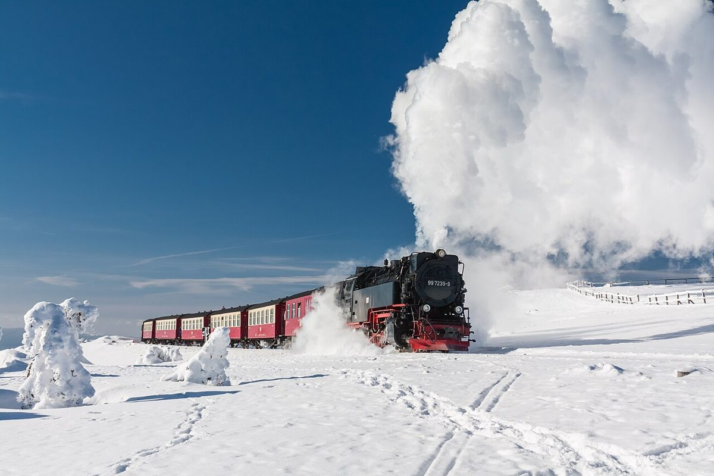

Discover the Magic of Harz Brocken, Germany’s Enchanted Mountain

The Harz Brocken, located in the heart of Germany, is a mystical mountain that has captured the imaginations of travelers for centuries. Standing at 1,141 meters, it’s the highest peak in the Harz Mountains and offers breathtaking views, unique natural landscapes, and a rich cultural history. Whether you’re a nature enthusiast, a history buff, or simply looking for a serene escape, Harz Brocken has something for everyone. Here’s everything you need to know to plan your visit.
How to Get to Harz Brocken
Harz Brocken is easily accessible from major cities in Germany. The nearest town is Schierke, which serves as a popular starting point for hikes and train rides to the summit. If you’re traveling by car, parking is available in Schierke or at the base of the mountain. Alternatively, you can take the historic Brocken Railway (Brockenbahn), a charming steam train that winds its way up the mountain, offering scenic views along the way. Regional trains also connect to nearby towns like Wernigerode and Goslar, making it convenient for those arriving by public transport.
Best Time to Visit
The best time to visit Harz Brocken depends on your interests. Spring and summer are ideal for hiking and enjoying the lush greenery, with wildflowers blooming across the landscape. Autumn transforms the area into a sea of golden and red foliage, perfect for photographers and nature lovers. Winter, on the other hand, turns Harz Brocken into a snowy wonderland, offering opportunities for snowshoeing and winter hikes. Keep in mind that the weather at the summit can be unpredictable year-round, so dress in layers and be prepared for sudden changes.
Top Highlights of Harz Brocken
- The Summit View: The panoramic view from the top of Harz Brocken is unparalleled. On a clear day, you can see for miles, taking in the rolling hills, dense forests, and charming villages below.
- The Brocken Garden: This alpine garden at the summit is home to a variety of rare plants and flowers that thrive in the mountain’s unique climate. It’s a must-see for botany enthusiasts.
- The Witch Legends: Harz Brocken is steeped in folklore, particularly tales of witches gathering here on Walpurgis Night (April 30th). Visit the Brocken Museum to learn more about these fascinating stories.
- The Harz Narrow-Gauge Railways: Take a ride on the historic Brocken Railway or the Selketalbahn to explore the Harz region in style. These steam trains are a nostalgic way to experience the landscape.
- The Hexentanzplatz: Although not on the summit, this nearby plateau is another legendary witch gathering spot. It offers stunning views, a theater, and a cable car ride for those seeking a different perspective.
Local Cuisine
After a day of exploring, indulge in some hearty Harz specialties. Try the region’s famous smoked meats and sausages, often served with traditional sides like sauerkraut and potatoes. Another local favorite is Brockenrädchen, a wheel-shaped pastry that’s perfect for a snack or dessert. Don’t forget to warm up with a cup of Glühwein (mulled wine) during the colder months. Many mountain huts and restaurants offer these delicacies, often paired with stunning views of the surrounding landscape.
Tips for Your Visit
- Wear sturdy footwear, especially if you plan to hike, as the terrain can be uneven and rocky.
- Check the weather forecast before heading to the summit and bring waterproof clothing, as mist and rain are common.
- If you’re traveling with children, the Brocken Railway is an exciting and family-friendly option.
- Arrive early to avoid crowds, especially during peak tourist seasons.
- Take your time to explore the surrounding Harz region, which is filled with charming towns, medieval castles, and scenic trails.
Harz Brocken is a destination that combines natural beauty, folklore, and history in a way that’s truly unique. Whether you’re climbing to the summit or taking a leisurely train ride, this magical mountain promises an unforgettable experience. Pack your bags and get ready to discover the enchantment of Harz Brocken!
Haiktec
- Sweet Dreams: 6 Magical Bedtime Stories to Help Your Child Sleep Better
- Ultimate Family Travel Budget & Packing List Tracker
- The Etsy Seller's Quick-Win Guide: 7 Simple Steps to Boost Visibility & Sales
Text mit KI erstellt und automatisch geprueft.